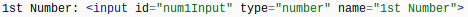

The purpose of this website is to help you understand the steps I took to make this website.
Steps I took:
I made a new HTML file to begin my hardware page.
I made a mainstyle.css file to style my website with the background color, text-alignment, a border at the top, and font. I used the code below for the mainstyle.
I linked my mainstyle.css file to my hardware page so the format would go to the page.
I use the biggest header tag for the main title of my website.
I made two comments so I would know where my navbar would start and end.
I made my navbar in between the two comments so I would have the links to all the different pages of my website.
I added a division tag under the second comment, a dotted border, a second header, then I began the body of the website. After that, I added another
tag, image, and another border. I repeated that for each topic.
